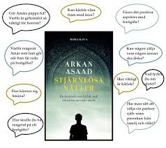
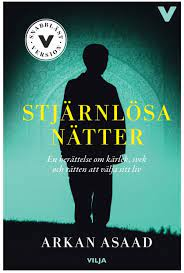
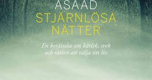
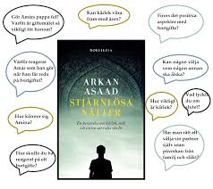
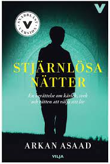
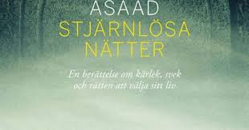

Amàr växer upp i en svensk småstad tillsammans med sina föräldrar och syskon. Hans pappa Casim har alkoholproblem och kan ibland ha hemska utbrott som går ut över hans mamma. En dag ger mamman upp, tar ut skilsmässa och lämnar Amàr och hans syskon hos pappan. Pappan gifter ganska snart om sig och syskonskaran växer. När Amàr är 19 år berättar hans pappa att de ska åka på semester till släktingarna i Irak, något som Amàr tycker verkar trevligt. Det var några år sedan senast han var där och att träffa släkten är alltid trevligt. De ska bila dit i två bilar och pappan vill inte övernatta på hotell eller vandrarhem utan tycker att de ska sova i bilarna. Det blir en jobbig resa för Amàr och hans syskon och de är rejält trötta efter de åtta dagarna som de varit på resande fot. Men vad gör det när de får så fint mottagande av alla släktingar som bjuder på god mat. Till en början är allt roligt för Amàr, att träffa sina kusiner som han lekt med när han var liten och alla andra känns bara bra.